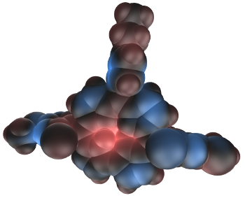

Overview over ManipulateAggregates
1.1
What you are currently viewing contains the documentation for ManipulateAggregates, a set of Python scripts written to perform some tasks related to what I did during my time as a PhD student that will be detailed in this documentation. For any license-related information, please see the file called COPYING and the header of each individual *.py file.
The module ManipulateAggregates consists of four submodules each of which resides in its own directory. The following is a list of all four submodules (in alphabetical order) including a synopsis of the functionality they provide.
- collection:
- read and write several file formats used in computational chemistry:
- geometry: cube, molden, xyz
- orbital data: molden
- volumetric data: cube, dx, xyz
- frequencies: aims, terachem
- control OpenGL from Python:
- draw (coloured) spheres and trimeshes
- export to pov-file to render with PoVRay
- prefix file names by auto-generated hashes to limit the number of files per directory (huge speed-ups for some file systems)
- read section-less Python config files (with defaults and type checks)
- most file types can also be read and written when gzipped
- control gnuplot from Python
- energyscan:
- estimate energetically favourable aggregate (dimers and higher ones) geometries in a three-step procedure:
- create a huge number of aggregates:
- Keep a central molecule fixed and
- move another molecule around the central one (varying orientations) and
- evaluate energy for every aggregate created (so far: using force fields).
- molecules can be replaced by entire aggregates
- search for local energy minima among the aggregates created in the previous step
- screen all of those local energy minimum structures to obtain a highly diverse set
- requires a slightly modified version of OpenBabel (https://github.com/razziel89/openbabel) including its Python bindings (incorporation into the official version is still a work-in-progress)
- requires libFireDeamon (https://github.com/razziel89/libfiredeamon) and its Python bindings
- aggregate:
- manipulate (internal) degrees of freedom of molecules and aggregates
- (compute and) visualize distributions of electrostatic potentials and electron densities
- empirical methods supported via OpenBabel (https://github.com/razziel89/openbabel)
- methods based on results from ab-initio computations supported via libFireDeamon (https://github.com/razziel89/libfiredeamon)
- live visualization using OpenGL
- high-quality visualization using PoVRay
- support for volumetric distributions
- support for distributions on surfaces:
- isosurfaces through volumetric data
- (scaled) van-der-Waals surfaces around molecules
- arbitrarily high degrees of discretization supported
- computations require the submodule orbitalcharacter
- example image for electrostatic potential below
- estimate a molecule's HLB value
- support for all file types supported by OpenBabel
- orbitalcharacter:
- compute electrostatic potentials and electron densities from quantum chemical orbitals
- corrections for the limited precision of the input data can be applied
- computations can be restricted to use only some of the available orbitals
- estimate the character of an orbital by comparison with orbitals of known character
- much of the functionality provided within the submodule orbitalcharacter can be sped up when using the C++-library libFireDeamon (https://github.com/razziel89/libfiredeamon)

Example Image - Electrostatic Potential on van-der-Waals surface
You need to have at least the following programmes/libraries installed to use ManipulateAggregates:
- GNU make
- Python2 (version >= 2.7, tested on 2.7.6) [if you want support for Python3, please contact me (razziel89) on GitHub]
- git (not needed if downloaded separately, e.g., as a zip-archive)
If you want all the functionality specified above, you also need:
if you want the most recent documentation, you have to have doxygen and doxypypy installed as well.
These should be straightforward to install on any modern Linux system and probably work without any changes on most *nix OSes.
If you have everything installed and are using the GNU C++ compiler, it should be sufficient to do:
git clone git://github.com/razziel89/manipulateaggregates.git ManipulateAggregates
cd ManipulateAggregates
./configure --prefix PREFIX
make doc #leave this out if you don't want the documentation
make install
Please replace PREFIX with the location where you want to install ManipulateAggregates. The location must be in your PYTHONPATH. You might need to prepend the last command with sudo depending on the chosen PREFIX. Please run
for more information about the configuration step.
Please note that, in this documentation, the entire package is always called "ManipulateAggregates". However, the module name can be changed when installing by using the
flag of the provided
script. The default, however, is "ManipulateAggregates".
- Author:
- Torsten Sachse
- Date:
- 2015-2016
- Version:
- 1.0
Licensed under the GNU General Public License version 3.
 1.6.1
1.6.1